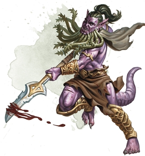

Bearded Devil
Bearded devils serve archdevils as shock troops, fighting shoulder-to-shoulder and reveling in the glory of battle. They respond with violence to any slight, real or imagined, gorging themselves on violence as their infernal saw-toothed glaives carve a path through their foes.
A bearded devil is humanoid in form, with pointed ears, scaly skin, a long tail, and claws that clearly show its fiendish nature. These devils take their names from the snakelike growths that adorn their chins, which they use to lash and poison enemies, weakening them with their virulent venom.